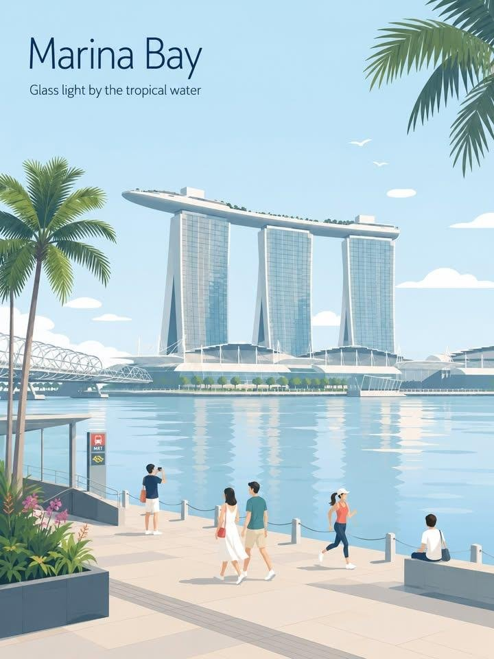
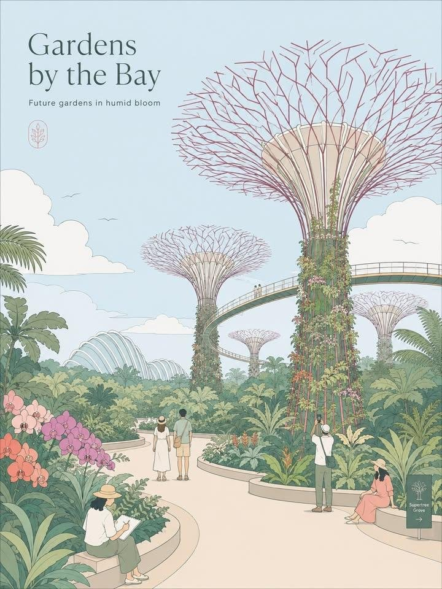
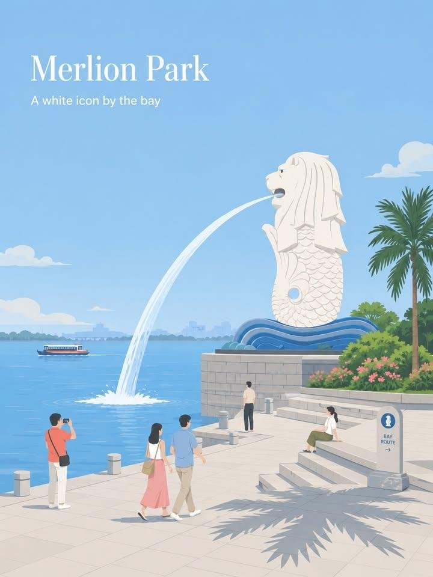
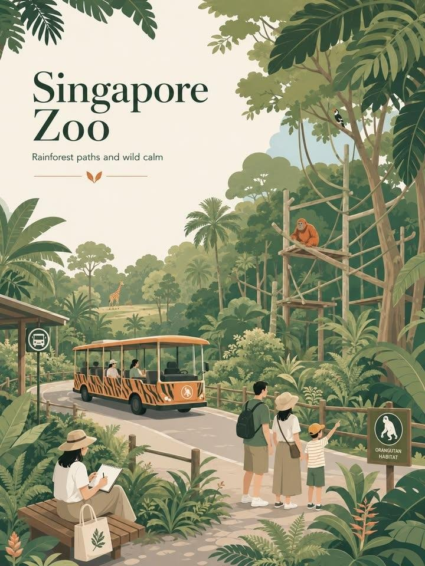

一条帖子的旅程
A Post's Journey今天演示所用的《城市旅行海报 Prompt 范本》，不是凭空写出来的——它的原文，四十天前刚被收进这个文件夹。这是那篇素材的完整旅程。
SimplyAnnisa 发出「GPT IMAGE 2 城市旅行海报 prompt」：一套 city DNA 框架——先识别每座城市独有的五样东西，再动笔；拒绝在城市之间复用同一种排版公式。




自动流水线把它抓进知识库：先落一份「基准」锁住原文长度与媒体数，再下载图片、翻译、写导读——两道校验脚本全部通过，才允许归档。
中英对照意译成中文范本，再生成一份学习导读——一条外来帖子，就这样变成了可教、可查、可复用的本地资产。同一时期，库里还收进了同一位作者的 Seedance 日系 Vlog 提示词（见第三幕的视频区）。
这条范本被改编进 8 月 30—31 日培训的「项目一·配套资料」。改编本身做了一次很小但典型的「照模板改」：
固定的一半不动（构图规则、配色、负面提示），只换掉不合课堂语境的那一处。
它成为「项目三·图片生产线」的拆范本主角，学员照着它反推、精修、批量出图。下图是按这套范本为今天的演示现场生成的样例——从一条帖子到讲台，四十天。

六条线路，一座城
The Relationship Map知识库里三百多篇文章，与今天这场演示是什么关系？把它们画成地铁线路：中央站是演示本身，六条线路各通向一种关系。点击任一站点，看它和中央站的连接说明。
三条路，都有人走通过
Three Paths, Proven演示教的是「得到提示词的三条路」：自己写、反复试；照模板改；从成品反推。这三条路不是教学假设——知识库里躺着每一条路的真人实证。
自己写，反复试
照模板改
从成品反推
三条路常常连着走：反推学来写法 → 攒成自己的模板 → 以后照着改。下面这面风格墙，就是「攒」的样子——
同一句底盘提示词，十四期连载，每期只换下半的视觉语言：丙烯平涂、纪念碑谷、单色网点、剪纸纸雕、浅浮雕……「固定的一半／要换的一半」的活体展示（作者 xiaoxiaodong01，库内藏有其中十四期）。
日系家庭录像 Vlog 提示词
第一位作者的另一面：写城市海报的 SimplyAnnisa，也写视频提示词。知识库收的不只是文章，是作者。
希腊陶瓶风动画
温泉关战役画成陶瓶纹样再动起来——风格迁移类提示词的代表作，也是「范本」二字在视频上的样子。
七段式视频提示词 Skill
把一套验证过的提示词结构固化成 Skill——「攒成自己的模板」，攒到头就是工具。
这三段视频没有一段来自素材网站——它们原本就躺在那个文件夹里。文件夹作为知识库，存的不只是文字。
两条生产线，同一种结构
Two Lines, One Shape把今天教的「图片生产线」和知识库自己的处理流水线并排放——会发现它们是同构的：母版对固定流程，要素对每篇链接，批量对三百五十六篇，验收对双校验。
图片生产线 THE DEMO · 9.19
知识库流水线 THE KNOWLEDGE BASE · EVERY DAY
攒，是复利
The Compound Curve流水线跑起来之后，攒的速度自己会变。六月的四十四篇，到八月变成一个月二百一十九篇。
「得到提示词的方法，就是这样一点一点攒起来的——本线结束时，你手里应该多出几张自己的模板。」演示任务书里的这句话，这个文件夹已经替它的主人先做了一遍。
反推学来写法 → 攒成自己的模板 → 以后照着改。
你的下载文件夹，也可以是一座城。